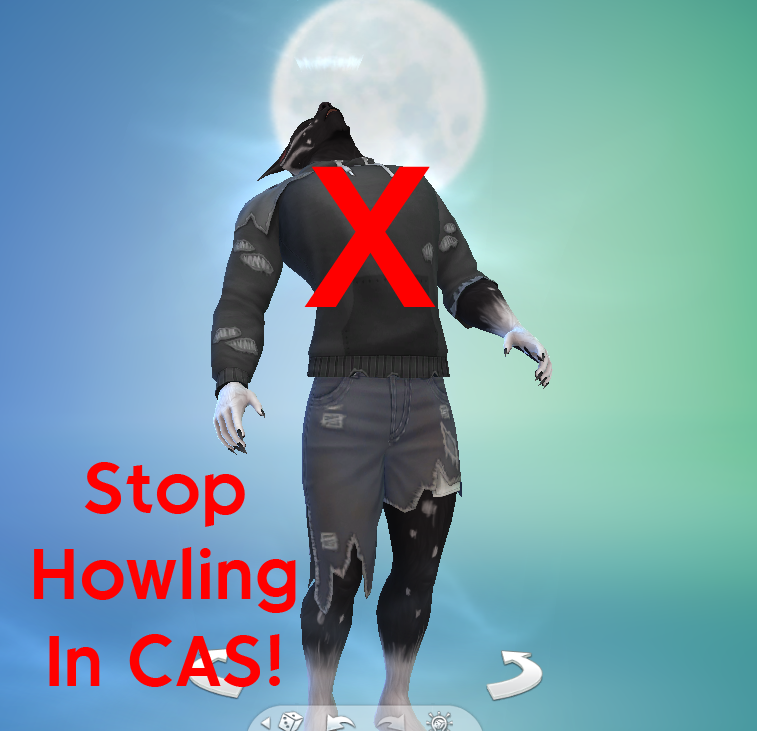

No Howling in CAS
A smol' override Sims 4 mod that completely removes the Werewolf Howl animation from the Create A Sim. Useful if you're tired of the constant howls and would prefer a quieter CAS without removing other occults idle animations
Available on:
Curseforge
ModTheSims.info